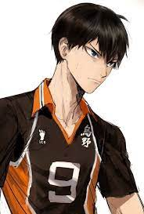
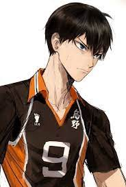
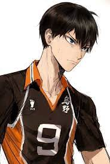

Os animes mostrados neste site são os meus favoritos falarei um pouco sobre eles por aqui, para mostrar a outras pessoas suas histórias cativantes.
Este é um site em que irei mostrar a todos os interessados no assunto animes não muito conhecidos, mas com muito potencial.falerei em especial sobre Haikyuu e Moriarty
the Patriot, animes totalmente diferentes mas com suas semelhanças, cativando o público a sempre querer saber mais sobre, se informar sobre os assuntos tratados
e ainda começar novas aventuras em sua vida cotidiana.
Descubra mais.
Haikyuu é um anime sobre vôlei que conta a história de Shoyo Hinata, um garoto do colegial com 1,64 metros de altura e um sonho de se tornar o pequeno
gigante no vôlei, sonhos grandes para alguém pequeno, mas com esforço e determinação Shoyo será capaz de evoluir com a ajuda de seus amigos mas não sem
sofrer no caminho pois isto faz parte da vida. Em sua vida hinata encontra diversos jogadores talentosos assim testando seus nervos. Kageyama é um jogador
super dotado que chama a atenção desde o fundamental em uma de suas partidas acaba encontrado o pequeno Hinata e acabam se tornando inimidos mas ao
decorrer do anime se tornam amigos. Hinata será capaz de superar o desafio de sua altura?
Descubra mais.

Moriarty the Patriot conta a hitória nem tão mostrada pelos livro de Sherlock Holmes, este anime conta a história de William James Moriarty
e seus irmãos, ao longo de uma tragetória como o larde do Crime, um homem inacreditável, vulgo James Moriarty que sonhava com um mundo sem deigualdades sociais
sem lordes comandado este mundo. Ao longo desta trama percebemos que em todo o mal há um pouco de bem, e que em todo o bem há um pouco de mal, irmãos unidos para
acabar com uma monarquia onde a pobreza é usada como objeto.
Descubra mais.

 
